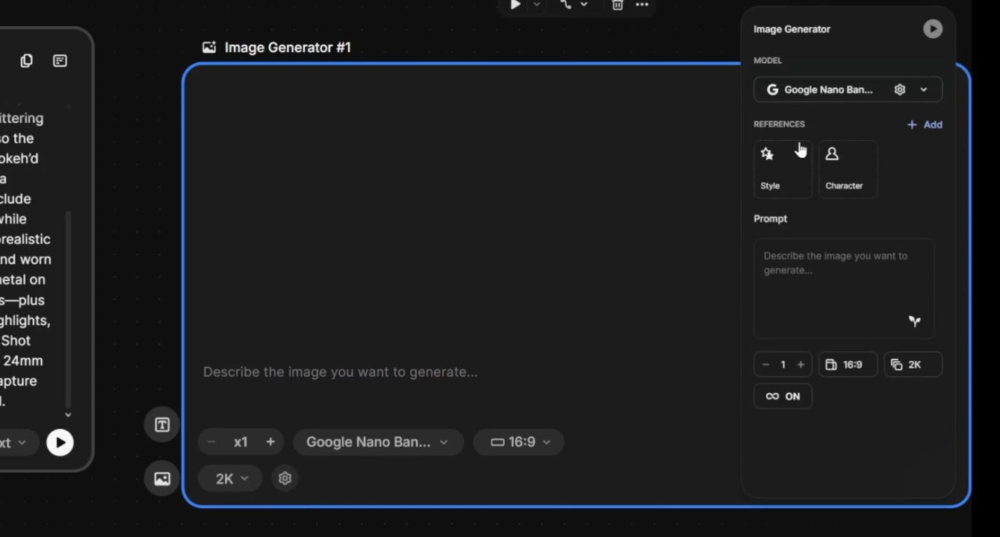
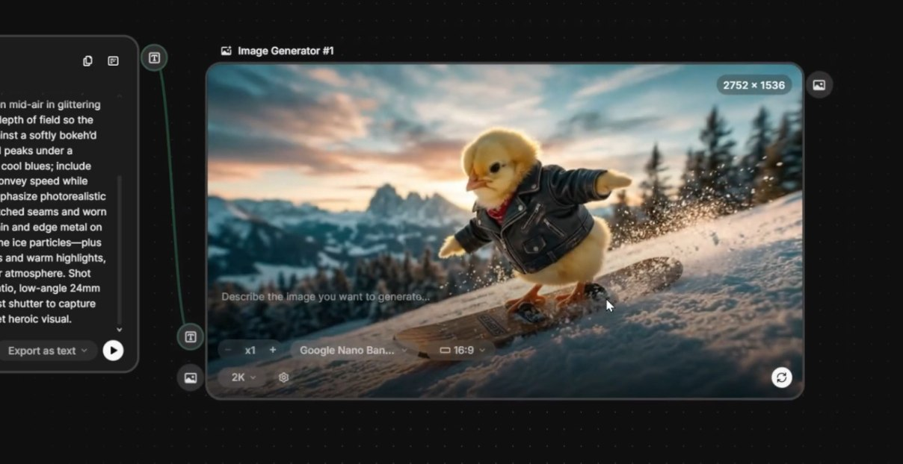
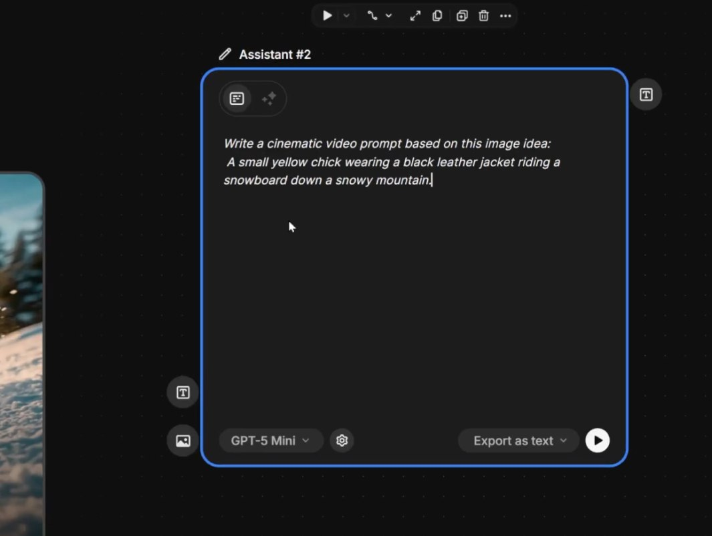

🖼️ Image Generator Node por Frame
A regra de ouro: um Image Generator Node por cena. Não tente reutilizar o mesmo node mudando o prompt — isso impede iteração paralela. Cada cena merece seu próprio node, com seu próprio histórico de variações.
⚙️ Setup recomendado
- •6 Image Generator Nodes alinhados horizontalmente, um por cena
- •Cada node nomeado: "CENA_01", "CENA_02"... — facilita revisão
- •Cores diferentes nas bordas via agrupamento (próximo tópico)
- •Modelo padronizado em todos: ou Mystic, ou Nano Banana Pro — não misturar

Image Generator Node — coração da geração de cenas. Um por frame do storyboard, configurado com character reference e prompt da cena
🔗 Character Reference Node
Aqui está o segredo da consistência: um único Character Reference Node conectado a todos os 6 Image Generator Nodes. Mude a referência uma vez e todas as cenas se atualizam. Continuidade automática.
Adicione o Character Reference Node
Coloque-o no topo do canvas, acima dos 6 Image Generators. Carregue o golden asset ou o token do Custom Character treinado.
Conecte a TODOS os 6 nodes
Cada cena recebe a referência via input "character". Um único ponto de verdade para o personagem inteiro.
Atualize uma vez, propaga em todas
Se você refinar a referência (luz melhor, expressão diferente), basta substituir no Character Reference Node — todas as cenas absorvem a mudança.

Character Reference Node sendo usado em múltiplas cenas

Mesmo personagem em ambiente diferente — referência travada
📋 List Node + Batch
Uma alternativa ao "um node por cena" é usar um List Node único com 6 prompts (um por cena) ligado a um Image Generator. O resultado são 6 imagens em paralelo — mais rápido, porém menos controlável por cena. Use para a primeira passada; depois refine cena a cena.
⚙️ Quando usar cada abordagem
Primeira passada do storyboard. Velocidade > controle. Iteração inicial.
Refinamento final. Controle total. Histórico de variações por cena.

List Node alimentando Image Generator com 6 prompts em paralelo — execução em batch para iteração rápida
🔬 Upscale de Cada Imagem
O Image Generator entrega frames em 1024-2048px. O Video Generator precisa de mais. Use o Upscale (Magnific ou Topaz nativo do Freepik) antes de mandar para o Kling — você ganha detalhe, textura e fotorrealismo no clipe final.
💡 Workflow de upscale
- Selecione a imagem aprovada da cena
- Conecte a um Magnific Upscale Node (configuração padrão: creativity baixa, fidelity alta)
- Espere ~30s por imagem
- Receba versão 4K — agora sim pronta para o Video Generator

Workflow de upscale — frame original passa pelo Magnific antes de ir para o Video Generator
🎨 Style Consistency
Personagem consistente não basta. A paleta e o mood também precisam ser. Cinema é coesão visual: se a cena 1 é fria e a cena 4 é warm sem motivo, o filme se quebra. Use os 3 truques abaixo para travar o look.
Style Reference
Carregue uma imagem de referência (frame de filme) como style ref. Todos os 6 nodes herdam a paleta.
Prompt sufixo
Termine todos os prompts com a mesma frase: "shot on Arri Alexa, teal and orange grade, anamorphic lens, film grain"
Color Match
Use o Color Match Node para forçar todas as cenas a herdarem a paleta exata da cena 1.
Frames diferentes mantendo a mesma paleta e mood — resultado de Style Reference + sufixo de prompt + Color Match
🗂️ Organizando no Canvas
Com 6 cenas × ~4 nodes por cena = 24+ nodes no canvas. Sem organização, vira sopa. Use agrupamento por cor e disposição em colunas. Você vai voltar a esse canvas múltiplas vezes — invista 5 minutos para arrumar.
📐 Layout recomendado
- •Linha 1 (topo): Text Node do roteiro + Character Reference + Style Reference
- •Linha 2: 6 Image Generator Nodes lado a lado, agrupados por cor (1 cor por cena)
- •Linha 3: 6 Magnific Upscale Nodes alinhados abaixo dos respectivos Image Generators
- •Linha 4 (próximo módulo): 6 Video Generator Nodes

Canvas organizado em linhas e colunas, fácil de navegar

Agrupamentos coloridos identificam cada cena visualmente
✅ Resumo do Módulo 6.4
Próximo Módulo:
6.5 — Animando as cenas com Kling 3.0, image-to-video e prompts de câmera